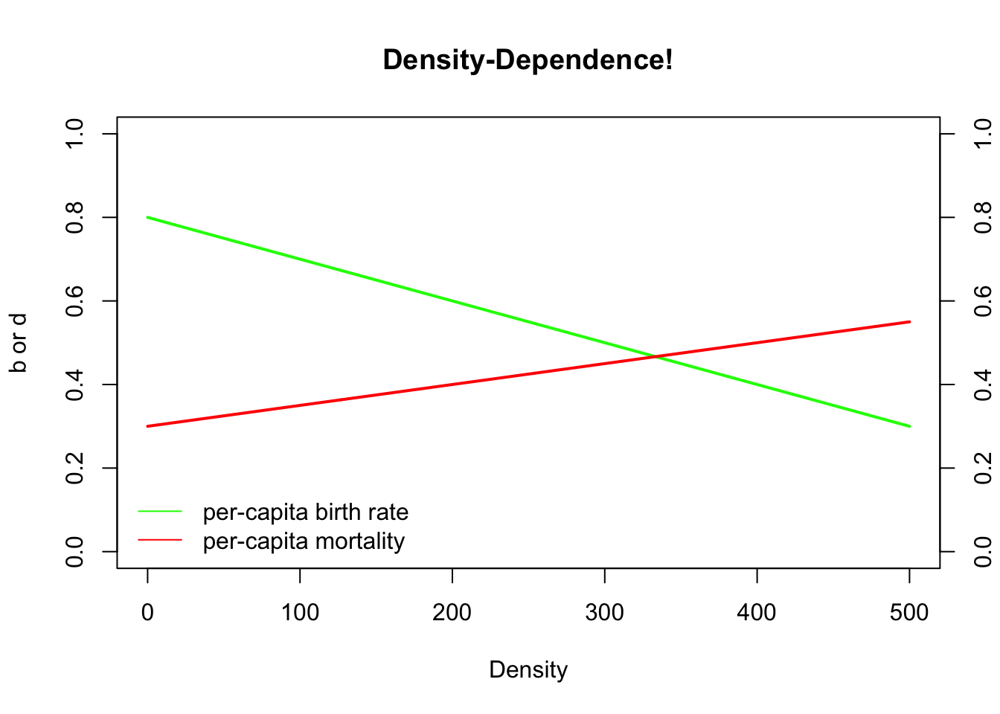
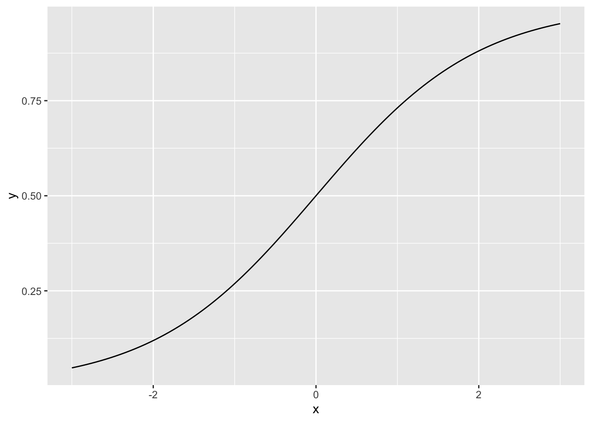
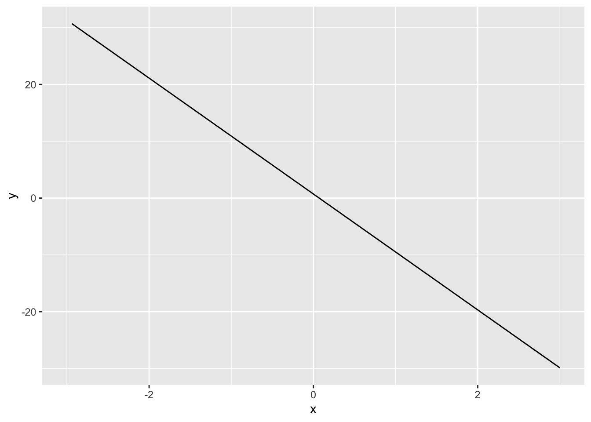
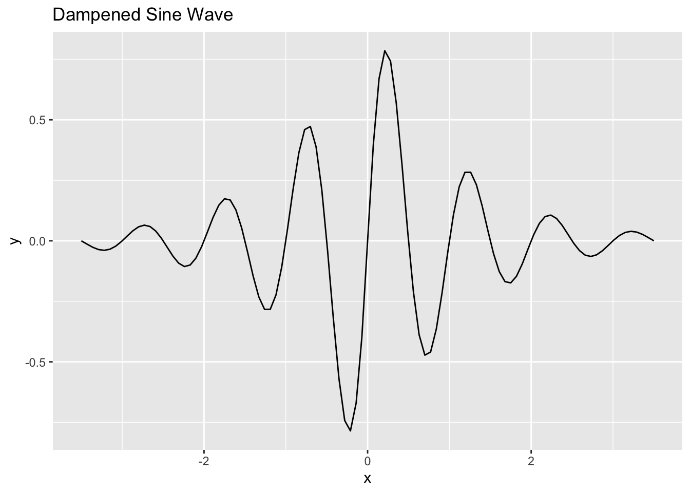

Regulación de Poblaciones
BIOL4558
Agosto 2021
colorize <- function(x, color) {
if (knitr::is_latex_output()) {
sprintf("\\textcolor{%s}{%s}", color, x)
} else if (knitr::is_html_output()) {
sprintf("<span style='color: %s;'>%s</span>", color,
x)
} else x
}¿Qué es la densidad denpendiente (D-D)?
La semana pasada pasamos por las matemáticas del crecimiento exponencial. Esta semana exploraremos modelos básicos de dependencia de la densidad. El crecimiento exponencial, como ha visto, conduce a la locura. No es sostenible. Como señaló Malthus, los recursos son finitos y, tarde o temprano, las poblaciones en crecimiento exponencial encontrarán sus límites.
Densidad : En D-D, * densidad * se refiere básicamente al número de individuos con los que estás compitiendo por alimentos y otros recursos. ¡Cuanto más compita con otros de su propia especie, menos favorables serán sus tasas vitale (por ejemplo, tasa de mortalidad per cápita, d, aumentos o tasa de natalidad per cápita, b, disminuciones)! A medida que sube N, las tasas vitales empeoran.
Regulación!
En primer lugar, mencionamos en nuestra discusión sobre ecología de sistemas que las retroalimentaciones positivas no son sostenibles, porque los aumentos significan aumentos más rápidos, significan aumentos más rápidos, etc. (un círculo vicioso). La dependencia de la densidad es un tipo de retroalimentación, pero NO es una retroalimentación positiva. Así es, ¡es un comentario negativo! Lo que también se conoce como retroalimentación estabilizadora. Como discutimos antes, las retroalimentaciones negativas son esenciales para sistemas bien regulados. Recuerde el ejemplo de la homeostasis en la biología de los organismos. Si el nivel de azúcar en sangre sube, el cuerpo trabajará para reducirlo y viceversa.
Lo mismo ocurre con las poblaciones. En una población regulada, un aumento en la abundancia provocará una disminución en la tasa de crecimiento de la población y una disminución en la abundancia provocará un aumento en la tasa de crecimiento de la población. En ecología de poblaciones (y especialmente en ciencias pesqueras), esta última a menudo se denomina crecimiento compensatorio. No se puede tener una población regulada sin algún tipo de retroalimentación negativa.
Q: ¿Cuáles son algunos posibles mecanismos de dependencia de la densidad? Es decir, ¿por qué las tasas vitales podrían volverse menos favorables a densidades más altas?
Q: ¿Están reguladas todas las poblaciones silvestres? ¿Es la regulación de la población dependiente de la densidad una “ley de la naturaleza”?
Logistic growth
El crecimiento logístico se puede describir matemáticamente mediante la siguiente ecuación:
\(\Delta N = r \cdot N_t \cdot \left ( 1 - \frac{N}{K} \right )\)
Esta es probablemente la segunda ecología más importante de la ecología de la población (¡después del crecimiento exponencial básico!).
Entraremos en más detalles en el laboratorio, pero analicemos un poco esta ecuación.
La primera parte de esta ecuación parece familiar, ¿verdad?
\(\Delta N = r \cdot N_t\)
¿Qué pasa con la segunda parte?
\(\left ( 1 - \frac{N}{K} \right )\)
Puede pensar en \(\frac{N}{K}\) como la porción utilizada de la capacidad de accereo
Del mismo modo, puedes pensar en \(\left ( 1 - \frac{N}{K} \right )\) como la porción no utilizada de la capacidad de carga
Cuando la capacidad de carga no se utiliza en su mayor parte, el crecimiento de la población se parece al crecimiento exponencial básico!
Cuando la capacidad de carga se agota en su mayor parte, el crecimiento de la población se parece, bueno …, no hay crecimiento en absoluto!
Q: Dadas las dos afirmaciones anteriores, ¿puede averiguar cómo debería ser la dinámica de la población con un crecimiento logístico, comenzando con una población muy pequeña?

La capacidad de carga es un punto de equilibrio.!
Un sistema de stock-flujo está en un punto de equilibrio cuando [Flujos de entrada] son iguales a [Flujos de salida]. Es decir, si las fuerzas opuestas se anulan entre sí.
Como muestra Gotelli, y lo repasaremos en detalle, puede derivar la ecuación de crecimiento logístico haciendo que b y d (a partir de la ecuación estándar de crecimiento de la población) sean ambos linealmente dependientes de la densidad:
\(b=b_{max}-a*[Density]\)
donde \(b_{max}\) es la tasa de natalidad máxima o ideal per cápita y \(a\) es el término de dependencia de la densidad.
Igualmente,
\(d=d_{min}+c*[Density]\)
donde \(d_ {min}\) es la tasa de mortalidad per cápita mínima o ideal (1-tasa de supervivencia máxima) y \(c\) es el término de dependencia de la densidad.
Podemos trazar estas ecuaciones en R:
Density <- seq (0,500,1) # crea una secuencia de números del 0 al 500, que representa un rango de densidades de población
## CONSTANTES
b_max <- 0.8 # maximo de reprodución (a densidad baja)
d_min <- 0.3 # minimo de mortalidad
a <- 0.001 # D-D terminos
c <- 0.0005
b <- b_max - a*Density
d <- d_min + c*Density
plot(Density,b,type="l",col="green",lwd=2,ylim=c(0,1),main="Density-Dependence!",ylab="b or d")
points(Density,d,type="l",col="red",lwd=2)
axis(4,at=seq(0,1,0.2))
#mtext("d",4)
legend("bottomleft",col=c("green","red"),lty=c(1,1),legend=c("per-capita birth rate","per-capita mortality"),bty="n")
Visualizando los cambios
Vea este website para ver los cambios en modelos de crecimiento logistico
library(tidyverse)Q: ¿Cuál es el punto de equilibrio en este sistema? Es decir, ¿cuál es la abundancia / densidad (distinta de cero) a la que el crecimiento de la población es igual a cero?
Este equilibrio se conoce como K o capacidad de carga?

Equilibrios estables y no estables
Un Equilibrio estable, es cuando con perturbación la población regresa a su punto de equilibrio.
Un Equilibrio no-estable, es cuando con perturbación la población NO regresa a su punto de equilibrio.
¿Es la imagen de la izquierda un equilibrio estable o no estable?
¿Qué pasa con la imagen de la derecha?
¿Qué pasa con K o capacidad de carga?
¡Vamos a averiguar!
Ejercicio en clase: crecimiento logístico
En primer lugar, de ahora en adelante, intente comenzar a guardar sus modelos de InsightMaker que funcionan, ya que a menudo construiremos a partir de modelos anteriores (¡para que no tengamos que comenzar desde cero en todas las clases!). Para construir a partir de un Insight anterior, abra un Insight anterior (p. Ej., Su modelo de crecimiento exponencial básico, o clone [este modelo] (https://insightmaker.com/insight/68236/Basic-population)) y elija “Clonar Insight”en la esquina superior derecha para crear una copia que pueda editar.
Este es el escenario que modelaremos: tanto b como d son dependientes de la densidad. Replicaremos el modelo del código R y la figura anterior, ¡esta vez en InsightMaker!
CONSTANTS
- [Maximum per-capita birth rate] = 0.8 individuals per individual per year
- [Minimum per-capita death rate] = 0.3 individuals per individual per year
- [Density dependence on fecundity] (a) = 0.001
- [Density dependence on mortality] (c) = 0.0005 EQUATIONS
- [Per-capita birth rate] = [Maximum per-capita birth rate] - [Density dependence on fecundity] * [Turtles]
- [Per-capita death rate] = [Minimum per-capita death rate] - [Density dependence on mortality] * [Turtles] ¿Cómo podemos hacer esto en InsightMaker?
Cargue un modelo básico de crecimiento exponencial. Cambie el nombre de [Stock] Box Turtles principal. Este [Stock] debe tener dos [Flujos], uno [Flujo de entrada] llamado Nacimientos y uno [Flujo de salida] llamado Muertes. Tanto Nacimientos como Defunciones deben definirse como el producto de tortugas y tasas per cápita, respectivamente llamadas Nacimientos per cápita y Defunciones per cápita (cada una definida en el lienzo como [Variables]). ¡Este modelo debería ser muy familiar!
Inicialice la población de Tortugas a 5 (muy por debajo de la capacidad de carga).
Haga cuatro nuevas [Variables] en el lienzo, para representar las cuatro constantes en nuestro modelo.
Establezca la Tasa máxima de natalidad per cápita en 0.8 (tortugas producidas por tortuga por año). Establezca la Tasa mínima de mortalidad per cápita en 0,3. Establezca la Dependencia de la densidad de la fecundidad en 0,001. Establezca la Dependencia de la densidad de la mortalidad en 0,0005.
Realice las conexiones adecuadas, como en la figura anterior, y use la ventana de ecuaciones para asegurarse de que las ecuaciones sean correctas.
Cambie la configuración para que la simulación se ejecute durante 100 años.
¡Tu modelo debería verse así! (Si aún no tiene un modelo como este, clone este modelo)

- Ejecute este modelo. ¿El modelo se comporta como cabría esperar?
Q: ¿Qué sucede si el tamaño de la población comienza en la capacidad de carga? [Edmodo]
Q: ¿Qué sucede si el tamaño de la población comienza
por encima de la capacidad de carga? [Edmodo]
Q: ¿Es este un equilibrio estable? [Edmodo]
Q: ¿Puede una población silvestre estar alguna vez en
un equilibrio no estable? ¿Qué pasa con un equilibrio estable? ¿Por qué
es importante conocer los equilibrios no estables?
- Considere la ecuación básica de crecimiento logístico:
\(\Delta N = r \cdot N_t \cdot \left ( 1 - \frac{N}{K} \right )\)
Abra su modelo InsightMaker para un crecimiento logístico básico con un término \(r_ {max}\) (flecha de dos puntas). O puede clonarlo desde aquí. Debería verse algo como esto:

- 1. Load a basic exponential-growth model. Rename the main [Stock] Box Turtles. This [Stock] should have two [Flows], one [Flow In] named Births and one [Flow Out] named Deaths. Both Births and Deaths should be defined as the product of turtles and per-capita rates, respectively called Births per capita and Deaths per capita (each defined on the canvas as [Variables]). This model should be very familiar!!
2. Initialize the population of Turtles to 5 (way below carrying capacity).
3. Make four new [Variables] on the canvas, to represent the four constants in our model.
4. Set the Maximum per-capita birth rate to 0.8 (turtles produced per turtle per year). Set the Minimum per-capita Death rate to 0.3. Set the Density dependence on fecundity to 0.001. Set the Density dependence on mortality to 0.0005.
5. Make the appropriate connections, as in the figure above, and use the equation window to make sure the equations are correct.
6. Change the settings so that the simulation runs for 100 years.
Haga que el tamaño de su población inicial sea muy pequeño en comparación con la capacidad de carga.
Q: ¿Qué sucede si \(r\) es cero? ¿Qué pasa con la capacidad de
carga?
Q: ¿Qué población es más probable que se encuentre en
la naturaleza o cerca de K? ¿Una población con \(r\) muy grandes o \(r\) muy pequeños?
Q: ¿Cómo se relaciona esta discusión con el concepto de
especies “seleccionadas por r” y “seleccionadas por K”?
Q: ¿Un valor alto de \(r\) es bueno o malo para la conservación?
Proyecto de esta semana
Foto del Nuevo Dia la siguiente pagina
Considerando la estructura los dos modelos anteriores, busca información sobre la Iguana de la Mona, Cyclura stejnegeri de fuentes como wikipedia y articulos revisados por pares, y construye modelos sencillo de crecimiento poblacional.
- deberia defender por que uso estos los parametros
- considerar cual con alternativas, y como afecta el crecimiento
- cual son parametros incierto o que falta para construir un modelo más realista.
Los supuestos del crecimiento logistico
La capacidad acerreo es constante:
Para lograr is curva en forma de S, o sea una curva logística se asume que K es consistente en tiempo. En otra palabra los recursos y su interaciones con sus depredadores etc no varia en el tiempo.
La crecimiento denso dependiente es lineal:
El modelo logistico asume que cada individuo que se añade a una población tiene un efecto negativo sobre la razón de crecimiento per capita. Esto se observa con la el crecimiento per capita de la población \(\frac{1}{N}*\frac{dN}{dt}\) donde el crecimiento depende del tamaño poblacional y la capacidad de acerreo.
- El crecimiento es maximo cuando \((b-d)=r\) cuando N es cerca de zero,
despues el crecimiento reduce hasta llegar a zero y entonces llega a
K.
- Si N es mayor K, la porblación se va a reducir
- Nota que aunque \(b\) y \(d\) son constantes, el razón de de mortandad \(b'\) y natalidad \(n'\) cambia con el tamaño poblacional.
Variación sobre el modelo básico
Retrasos en tiempo / Time Lag
El modelo básico asume que cuando individuos se añaden a la población, el efecto sobre la razón de crecimiento es inmediato. Pero en muchas especies el efecto se puede ser postergado a un momento en el futuro.
Ejemplos:
- Plantas anuales no tienen time lag (asumiendo que no hay banco de semillas)
- Los elefantes comienzan a reproducirse solamente después de 14-15 años
- Los Coqui’s se pueden reproducir a la edad de ± 8 meses
- El árbol de “Brazil Nuts”, Bertholletia excelsa necesita más de 120 años antes de producir flores.
- La Caoba, Swietenia mahogani tienen que tener 50 años antes de comenzar a reproducirse
Para considerar el efecto de retraso en tiempo, se puede incluir la información en el modelo de la siguiente forma
\[\frac{dN}{dt}=rN_{i}(1-\frac{N_{i-t}}{K})\] por consecuencia el efecto sobre el crecimiento esta atrasado por el tiempo \(t\), donde la \(i\) representa el tiempo. El comportamiento de los que es una ecuación differencial de retardo depende de 2 factores.
- el tiempo de retardo, \(\tau\) (se dice tau),
- el tiempo de repuesta de una población, que es inversamente proporcional.
La razón de \(\tau\) al tiempo de respuesta \(\frac{1}{r}\) o \(r\tau\) controla para el crecimiento de la población.
Si \(r\tau\)
- pequeño, \((0 < r\tau < 0.368)\), la población aumenta de forma gradual a K
- mediano, \((0.368 < r\tau < 1.570)\), la población sobre pasa K, despues va por debajo, y con tiempo con una oscilación amortiguada se estabiliza a K.
- grande \((r\tau > 1.570)\), la población entra en una oscilación continua sin llegar (Stable Limit Cycle) a estabilizarse a K.
Lo importante no son tanto los valores que reconocer que debido a la razon de \(r\tau\), la población actua de forma muy diferentes.
Gráficos Logistico
p <- ggplot(data = data.frame(x = c(-3, 3)), aes(x))
scurve <- function(x){
y <- exp(x) / (1 + exp(x))
return(y)
}
n=101
p + stat_function(fun = scurve, n = n) 
#p + stat_function(fun = function(x) exp(x)/(1+exp(x)), n = 100) Damped response
Un buen sitio para conseguir más información es en el siguiente enlace.
https://hankstevens.github.io/Primer-of-Ecology/DDgrowth.html
q <- ggplot(data = data.frame(x = c(-3, 3)), aes(x))
x = c(-3, 3)
r=0.001
N=101
scurve <- function(x){
y <- exp(x) / (1 + exp(x))
return(y)
}
damped <- function(x){
y <- r*N*(1 - lag(N*x))
return(y)
}
q+stat_function(fun = damped, n = N) ## Warning: Removed 1 row(s) containing missing values (geom_path).
Sine wave damping
f <- function(x) exp(-abs(x)) * sin(2 * pi * x)
ggplot(data.frame(x = c(-3.5, 3.5))) +
aes(x) +
stat_function(fun = f) +
ggtitle("Dampened Sine Wave")